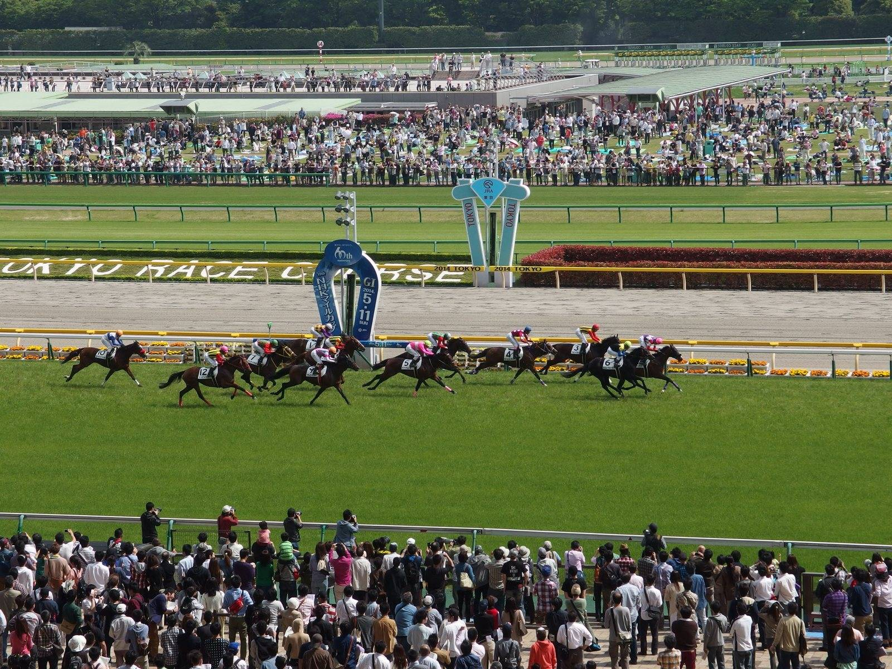

Good to be King caza a Regent's Park en los últimos trancos y gana el Futurity de Belmont
Good to be King se impuso por un cuerpo en el Futurity Stakes (Grupo III) de Belmont Park. Era la cuarta victoria de la tarde para Manny Franco y el billete para la Breeders' Cup Juvenile Turf Sprint.

La carrera tuvo dueña durante casi cinco furlongs. My Kid's Said No, una de las dos potrancas del lote, salió disparada desde el palo, abrió una ventaja de dos dígitos en cuerpos y pasó el primer cuarto en 21,71 s. Good to be King, favorito a 3-2, salió sin prisa con el resto del grupo.
Franco lo llevó quinto y pegado a la cuerda en la curva final. Esperó por dentro hasta que la líder cruzó el poste del cuarto y solo entonces lo abrió hacia el centro de la pista. My Kid's Said No aún iba muy destacada dentro del último furlong, pero acabó cediendo. El primero en aprovecharlo fue Regent's Park (Bolt d'Oro), que tomó la cabeza a algo más de un dieciseisavo de la meta. Good to be King llegaba lanzado por el centro y lo superó en los últimos trancos.
El hijo de War Front paró el crono en 1:09.06 para los seis furlongs sobre hierba firme y ganó por un cuerpo. Luminous Beauty, la otra potranca, remontó hasta la tercera plaza, a cuatro cuerpos y cuarto. La carrera, con una bolsa de 200.000 dólares, formaba parte del programa «Win and You're In»: el ganador tiene su plaza en la Breeders' Cup Juvenile Turf Sprint del 31 de octubre.
Es su primera victoria en una carrera con black type. Good to be King había roto su condición de maiden en Ellis Park y después fue colocado dos veces en stakes. La última, en el Juvenile Sprint de Kentucky Downs del 29 de agosto, terminó a tres cuartos de cuerpo del ganador. Suma 5 salidas, 2 victorias, un segundo y un tercer puesto.
Criado y propiedad de Cherry Valley Farm, es el 74.º ganador de carreras de grupo para War Front y el primer ganador de su madre, Gypsy Touch, por Runhappy.
«Creo que corrió muy bien», dijo su preparador, Rusty Arnold, que siguió la carrera por televisión desde Keeneland. «Uno se fue tan por delante que no sabías qué iba a pasar, pero estoy muy contento con cómo terminó. Ojalá pueda pasar a la siguiente».
— Redacción de Galope al Día